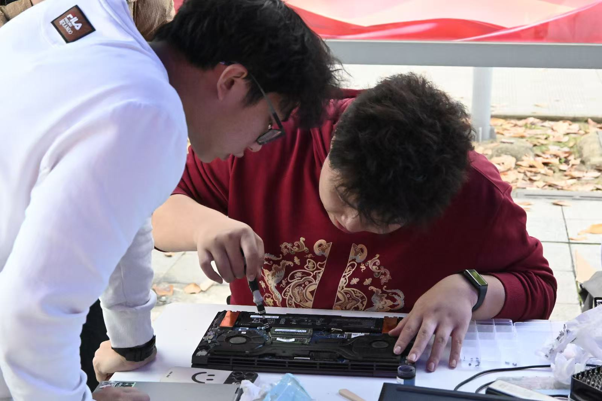
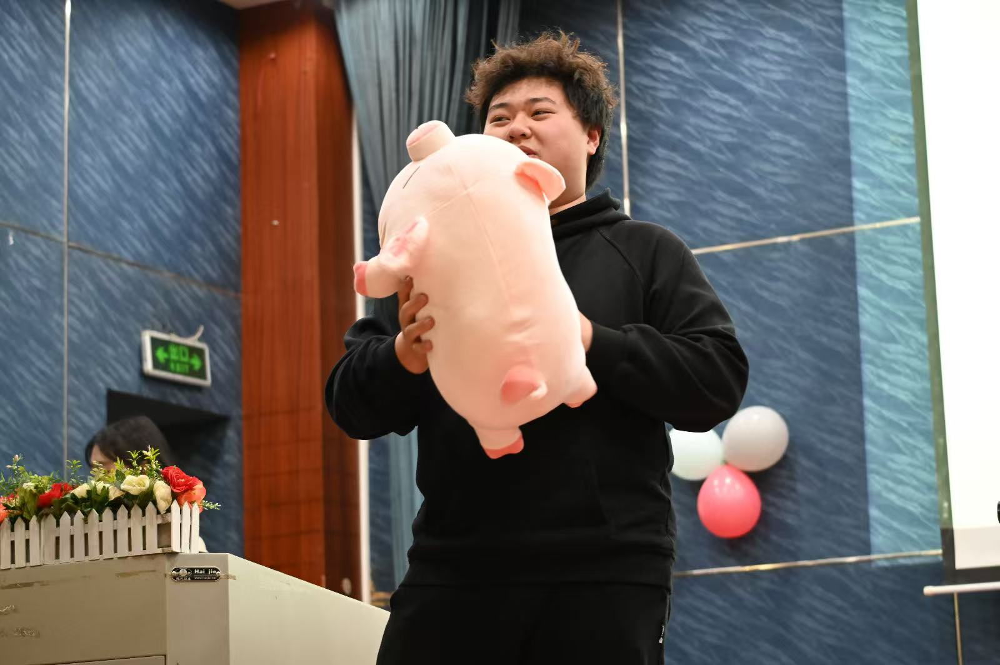
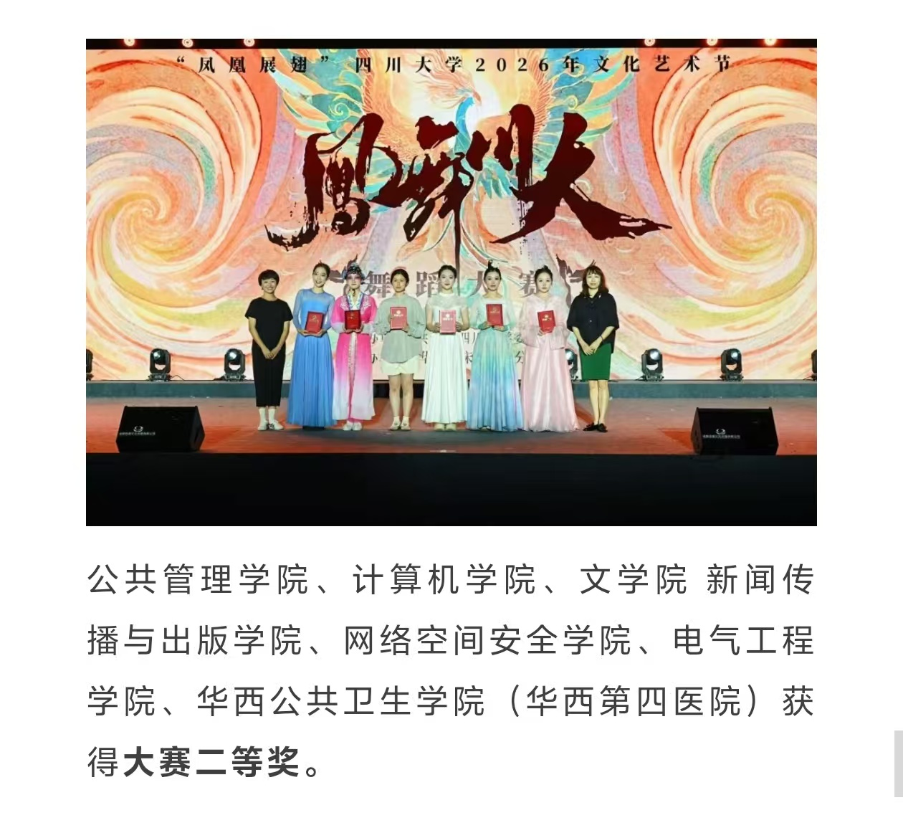
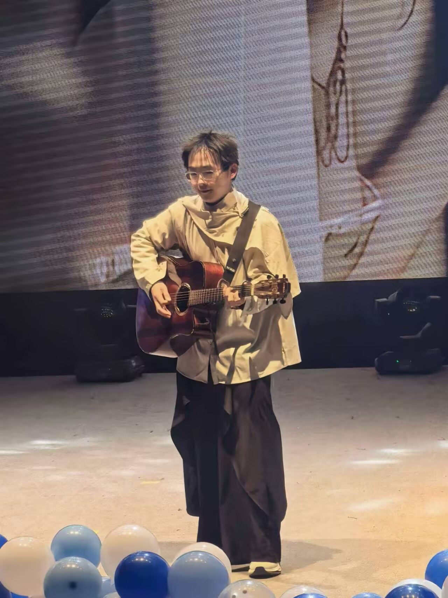
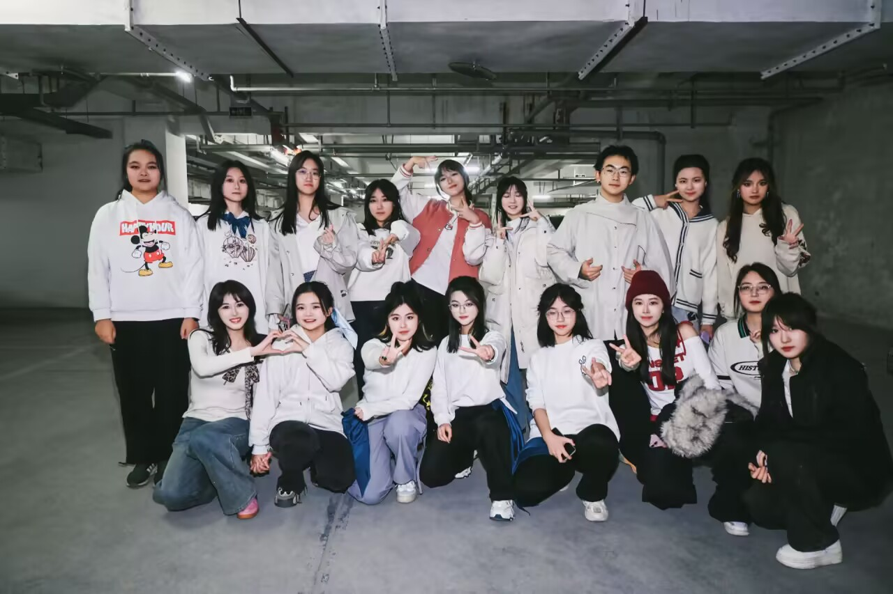
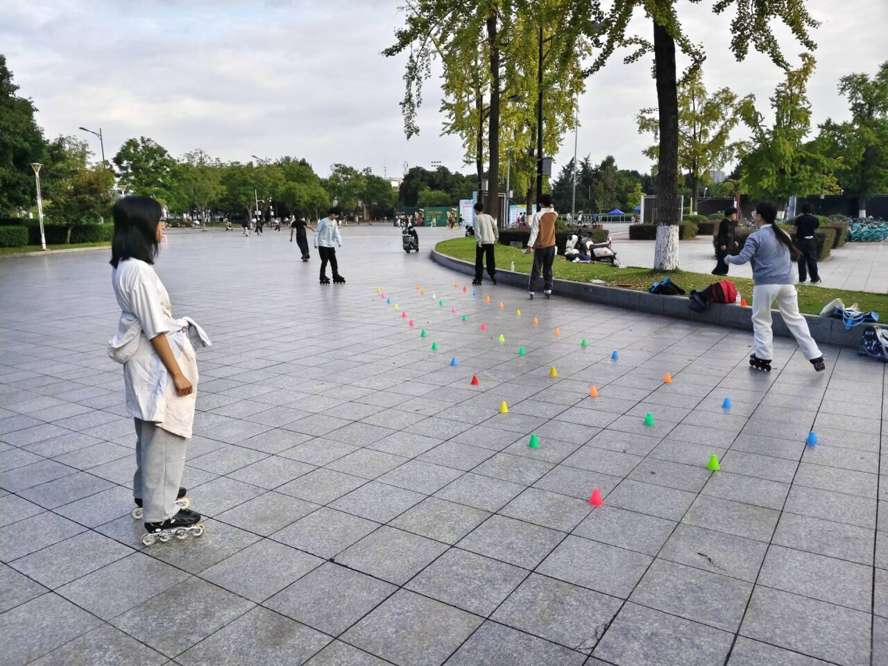

HARDWARE & REPAIR
硬件维修 · 传帮带
系统重装与多平台架构
独立完成 Windows / Linux（Ubuntu / Arch / Kali）/ macOS 重装与引导修复。不太熟悉这些启动流程，但是可以应对部分引导故障。
硬件拆装与深度维护
熟悉笔记本/台式机内部排线与硬件布局（内存、硬盘、风扇、电池、排线）。可独立完成清灰、更换硅脂、磁盘分区与 C 盘深度清理。本学期参与三次大修，全程投入一线维修。
传帮带意识
在大修现场主动帮助刚开始修机的干事同学，讲解拆机清灰思路、装机卡扣具体操作过程、遇到各种情况如何处理、怎么请教学长学姐。
不只是自己会修，更要带出一支能修、会修的队伍。让每个新人都能在实践中成长。



DIVERSITY
竞赛获奖 · 多元发展
竞赛获奖
- CTF 新生赛 · 二等奖
- 凤舞比赛 · 二等奖


迎新晚会
参加学院迎新晚会表演三个节目：吉他 solo、舞蹈队群舞、班级合唱。以上三件事发生在同一天 😄


组织社团
网安舞蹈队 · 轮滑社团 · 魔方社团 · 软网足球队（友情参与）· 靶场团队（主攻逆向）· 飞扬俱乐部（十佳社团）

小众爱好
蝴蝶刀 · 双截棍 · 街健 · 羽毛球 · 长跑 · 骑行 · 篮球 · 乒乓球 · 吉他
二次元
新海诚 · V 圈 · 超级喜欢 Miku · 之前喜欢玩 pjsk（音游）